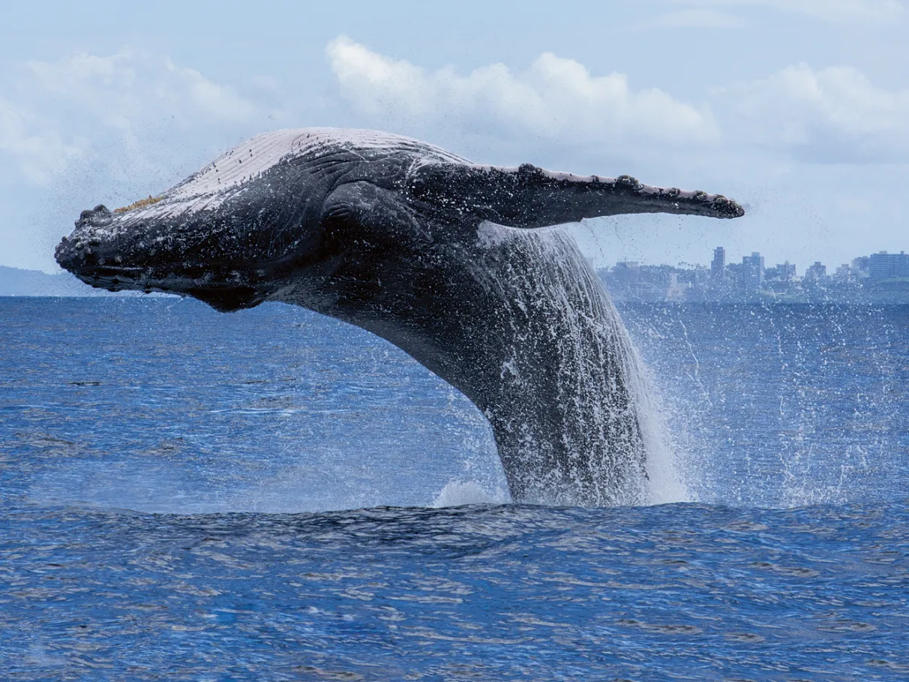

Baleia-Azul
Página Inicial
Detalhes
Fotos
Formulario
Mapa das espécies
Caracteristicas basicas
Nome comum: Baleia-Azul
Nome científico: Balaenoptera musculus
Expectativa média de vida na natureza: 50 a 90 anos
Tamanho: 25 e 33 metros de comprimento
Peso: 72 a 140 toneladas
